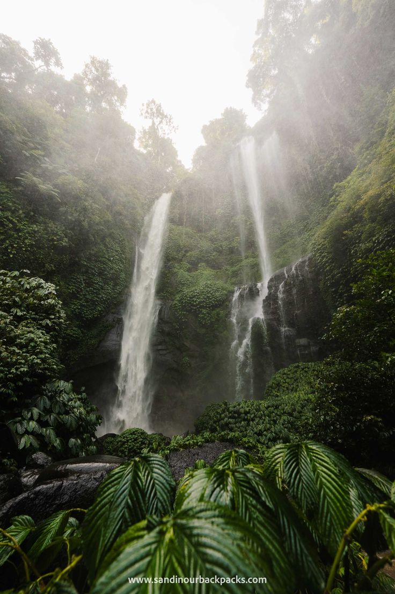

Jelajahi Destinasi Wisata Alam Berdasarkan Daerah


Cari, Lihat, Ceritakan!
Lihat foto-foto memukau dan kisah nyata dari sesama penjelajah Nusantara. Unggah pengalaman terbaik Anda dan jadilah inspirasi.
Rekomendasi Wisata Pantai & Laut


Rekomendasi Wisata Gunung

Rinjani

Merbabu

Jaya Wijaya

Kerinci
Rekomendasi Wisata Air Terjun

Madakaripura

Coban Talun

Tegunangan

Sekumpul
Rekomendasi Wisata Danau

Labuan Cermin

Danau Sentani

Danau Toba